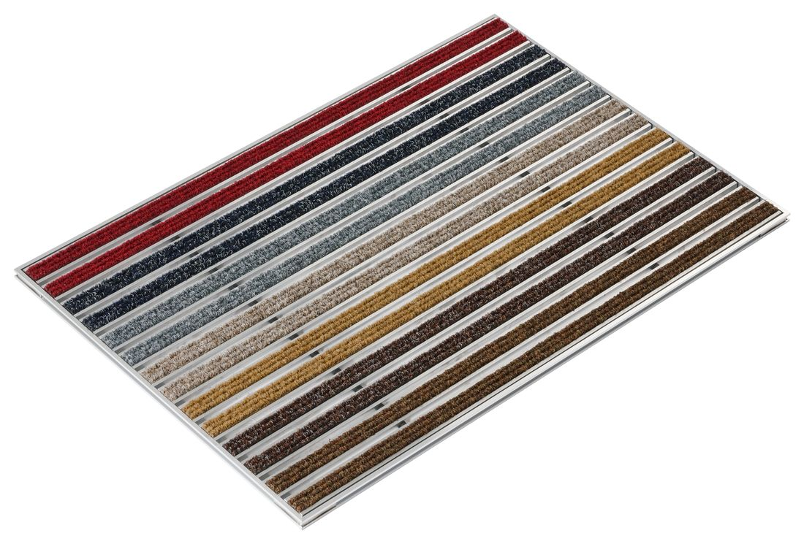

Wycieraczka aluminiowa z wkładem rypsowym (tekstylnym), profil wysoki 19/30 mm
Wkład rypsowy to tekstylna wykładzina wpuszczona między aluminiowe profile. Dobrze chłonie wilgoć i drobny brud, dlatego wycieraczka z rypsem sprawdza się najlepiej wewnątrz budynków: w holu, korytarzu, biurze i sklepie.
Wysoki profil 19/30 mm jest mocniejszy i lepiej znosi duży ruch oraz ciężkie obuwie, dlatego wybierają go lokale usługowe i budynki publiczne.
Mata 40×60 cm już od 192,00 zł netto (236,16 zł brutto). Cena zależy od wymiaru, dokładną kwotę policzysz w konfiguratorze.
Dane techniczne
| Profil | Profil wysoki 19/30 mm |
| Wkład | Rypsowy (tekstylny) |
| Wymiar | Na wymiar, dowolna długość i szerokość, także nietypowy kształt |
| Cena za m² | 800,00 zł netto (984,00 zł brutto) |
| Próg najazdowy | Aluminiowy, do dokupienia w konfiguratorze (68 zł netto / mb) |
| Ramka | Aluminiowa ramka kątowa, do wyboru w konfiguratorze |
| Dostawa | Wysyłka na terenie całej Polski |
Do jakich miejsc pasuje ta wycieraczka?
Profil wysoki to wybór do wejść o dużym natężeniu ruchu: sklepów, biur, szkół i budynków publicznych. Wkład, który wybrałeś, najlepiej sprawdzi się tutaj:
- wejście do domu i bloku, hol, korytarz
- biuro, gabinet, recepcja, sklep
- wiatrołap i miejsca, gdzie liczy się wygląd
Zalety
- chłonie wilgoć z podeszw
- dostępny w sześciu kolorach: brązowym, beżowym, czarnym, szarym, złotym i czerwonym
- łatwo dopasować do wnętrza
- czyści się odkurzaczem
Pielęgnacja
Wkład rypsowy wystarczy regularnie odkurzać. Zabrudzenia wilgotne można zebrać odkurzaczem piorącym lub przetrzeć wilgotną szmatką.
Jak zamówić?
- Zmierz wnękę lub miejsce przed drzwiami: długość i szerokość.
- W konfiguratorze wpisz wymiary, wybierz profil, wkład i kolor.
- Dodaj do koszyka i wyślij zamówienie. Przy nietypowym kształcie użyj kreatora kształtu.
Najczęstsze pytania
Czy wycieraczka rypsowa nadaje się na zewnątrz?
Ryps najlepiej sprawdza się wewnątrz lub pod zadaszeniem. Na wejście wystawione na deszcz i śnieg lepsza jest guma, szczotka albo mix.
Jakie kolory rypsu są dostępne?
Wkład rypsowy mamy w sześciu kolorach: brązowym, beżowym, czarnym, szarym, złotym i czerwonym. Kolor wybierasz w konfiguratorze.
Czym różni się profil niski 12/30 mm od wysokiego 19/30 mm?
Profil niski 12/30 mm jest cieńszy i pasuje do wnęk, wiatrołapów i miejsc z niewielkim progiem. Profil wysoki 19/30 mm jest mocniejszy i przeznaczony do wejść o dużym natężeniu ruchu.
Ile kosztuje ta wycieraczka?
Cena zależy od wymiaru. Ta wycieraczka kosztuje 800,00 zł netto (984,00 zł brutto) za m². Najmniejsza mata 40×60 cm kosztuje od 192,00 zł netto (236,16 zł brutto). Dokładną cenę zobaczysz w konfiguratorze po wpisaniu długości i szerokości.